")
ST-154 - RF Monitoring System
The main purpose of the system is the detection of unauthorized transmission within the supervised area. These areas include:
•Meeting rooms and offices
•Exam rooms and testing facilities
•Prisons and correctional facilities
•Areas with limited use of cell phones, radios, etc.
ST154 detects:
•RF bugging devices
•Сell phones and modems (CDMA450, GSM 900, GSM 1800, 3G)*, wireless data transmitters (4G, WLAN, BLUETOOTH 2.4 and 5 GHz), cordless phone systems (DECT) as well as special technical devices using these data transmission standards
•Analog radio transmitters
*the settings of cellular frequencies, depending on the country and mobile operator, are provided.
Simultaneous monitoring from 1 to 128 local areas.
No special training required.
Many opportunities for selecting the configuration of the system.
Data transmission over wired (WLAN) and wireless (ETHERNET) networks.
GENERAL DESCRIPTION
The main unit of the system is the control module (hereinafter CM) which performs the reception and analysis of signals. Detection area of the CM depends on many factors and the estimated average value is 10 to 50 square meters. Appearance of illegal signals is displayed by light and sound signaling directly on the CM or transmitted via ETHERNET or WLAN to the checkpoint computer. The checkpoint computer can be any Windows-compatible desktop computer, laptop or tablet that has been installed special software Round-the-clock monitoring of radio environment and the event log are provided. In addition, there is the search module (SM) that ensures determination the exact location of the radio transmission device.
The main unit of the system is the control module (hereinafter CM) which performs the reception and analysis of signals. Detection area of the CM depends on many factors and the estimated average value is 10 to 50 square meters. Appearance of illegal signals is displayed by light and sound signaling directly on the CM or transmitted via ETHERNET or WLAN to the checkpoint computer. The checkpoint computer can be any Windows-compatible desktop computer, laptop or tablet that has been installed special software Round-the-clock monitoring of radio environment and the event log are provided. In addition, there is the search module (SM) that ensures determination the exact location of the radio transmission device.
DESCRIPTION OF THE СM
 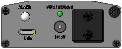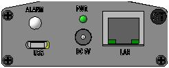
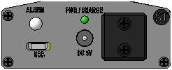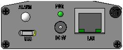 ST154.A ST154.W ST154.E/ST154E+POE
It is possible to manufacture KM in vandal-proof version. Degree of protection IP66.
 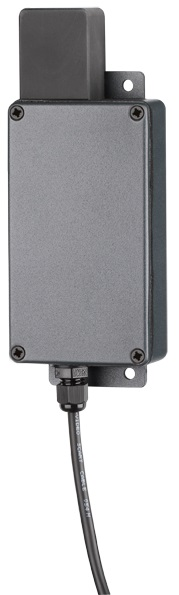
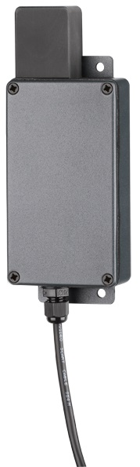Modification with 4-way antenna switch
This modification provides the ability to connect antennas, including directional, corresponding to the analyzed frequency range. This allows you to significantly increase the detection range when working in a wide range of frequencies.
This modification provides the ability to connect antennas, including directional, corresponding to the analyzed frequency range. This allows you to significantly increase the detection range when working in a wide range of frequencies.
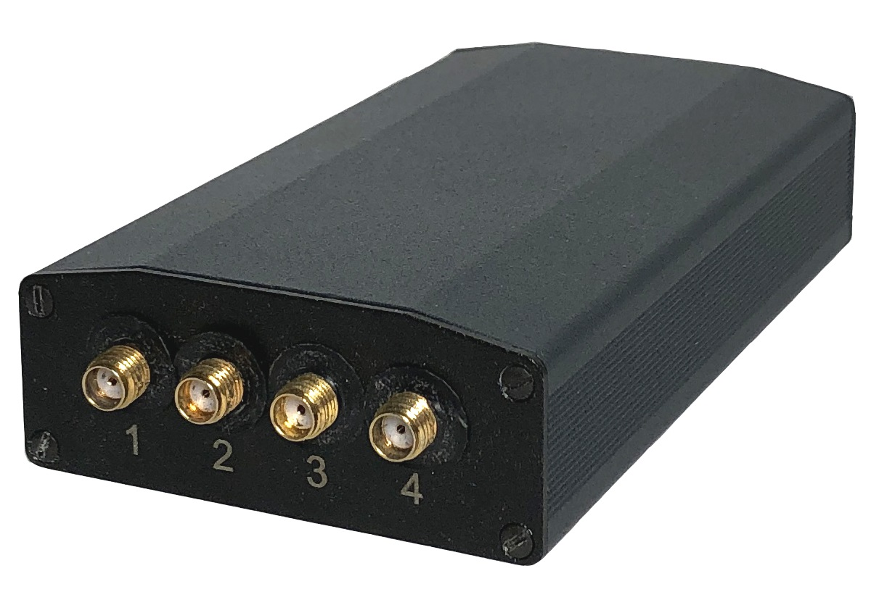
Control is carried out from the ST154.NET program
This subsection is intended for tuning the ST154.X(4) antenna switch. Two switching modes are provided: “Manual” and “Auto”.
This subsection is intended for tuning the ST154.X(4) antenna switch. Two switching modes are provided: “Manual” and “Auto”.
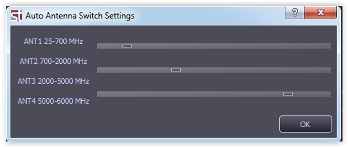
In manual mode, the number of the connected input connector of the antenna switch corresponds to the number selected in the software. When automatic mode is selected automatic serial connection of antennas is provided, depending on the frequency range specified in the settings window.
In manual mode, the number of the connected input connector of the antenna switch corresponds to the number selected in the software. When automatic mode is selected automatic serial connection of antennas is provided, depending on the frequency range specified in the settings window.

The СM is composed of:
•radio-receiving unit with separate highly sensitive circuit for 3G band.
•transceiver for providing communication via WLAN (ST154.W) or ETHERNET (ST154.E/ST154.E+POE) networks
•radio-receiving unit with separate highly sensitive circuit for 3G band.
•transceiver for providing communication via WLAN (ST154.W) or ETHERNET (ST154.E/ST154.E+POE) networks
The surface of the СM has:
•Connector for power supply
•Power switch
•SMA connectors for connecting RF antennas.
•LED alarm.
•USB connector
•RJ-45 connector (only for ST154.E/ST154.E+POE)
•WLAN antenna (only for ST154.W)
•Connector for power supply
•Power switch
•SMA connectors for connecting RF antennas.
•LED alarm.
•USB connector
•RJ-45 connector (only for ST154.E/ST154.E+POE)
•WLAN antenna (only for ST154.W)
Parameters of light and sound alarm are set via the USB port.
DESCRIPTION OF THE SM
DESCRIPTION OF THE SM
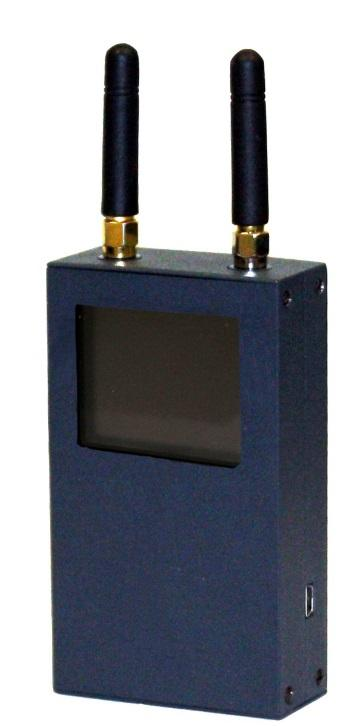 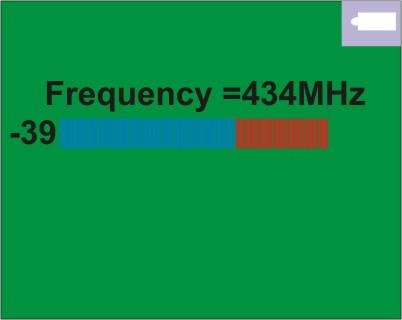
The surface of the SM has:
•Charge connector
•Power switch
•SMA connectors for connecting RF antennas
•OLED display with receive signal strength indicator (RSSI)
•USB connector
•Charge connector
•Power switch
•SMA connectors for connecting RF antennas
•OLED display with receive signal strength indicator (RSSI)
•USB connector
CONFIGURATION OPTIONS OF THE SYSTEM
The minimum configuration consists of the only CM with the light and audible alarm indication (ST154.A). Presetting is performed via the USB port. This option is intended primarily for the radio environment control within the one room.
 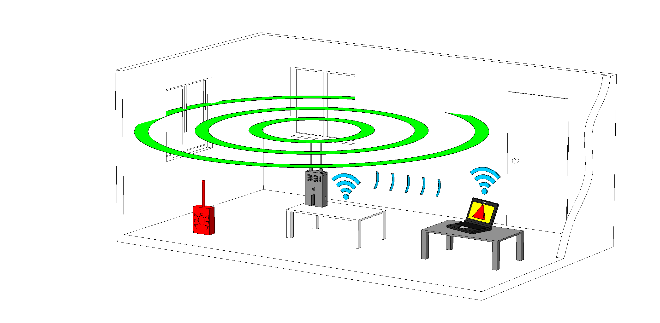
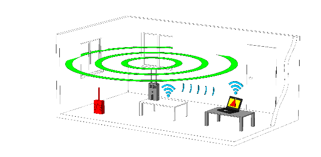To cover more than one room in a multi-story building is a variant with alarm transmission to a checkpoint computer via WLAN (ST154.W) or ETHERNET (ST154.E/ST154.E+POE) using a specially created or existing network.
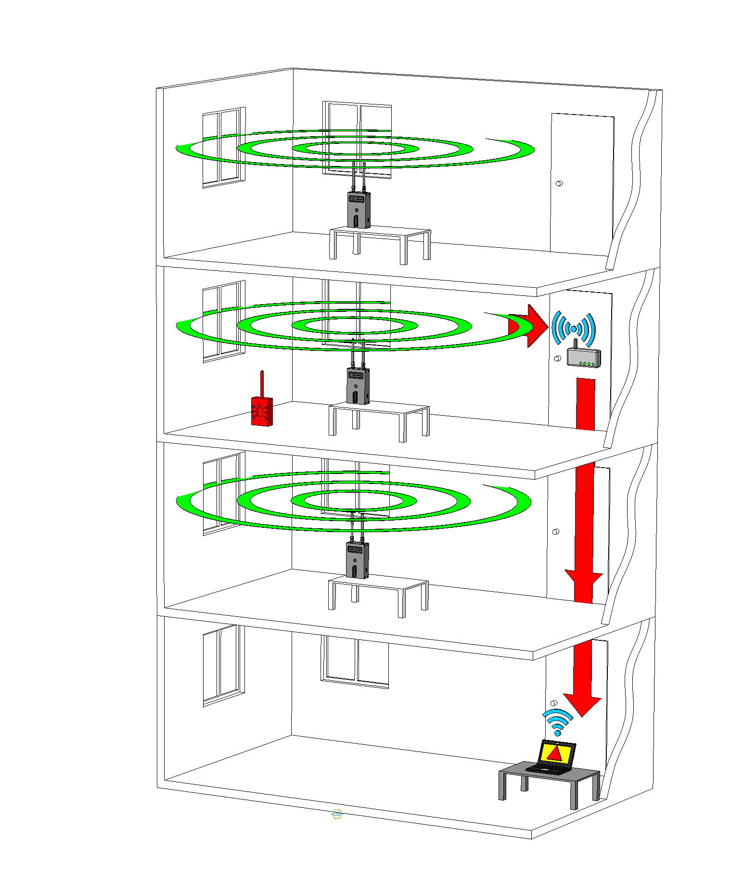 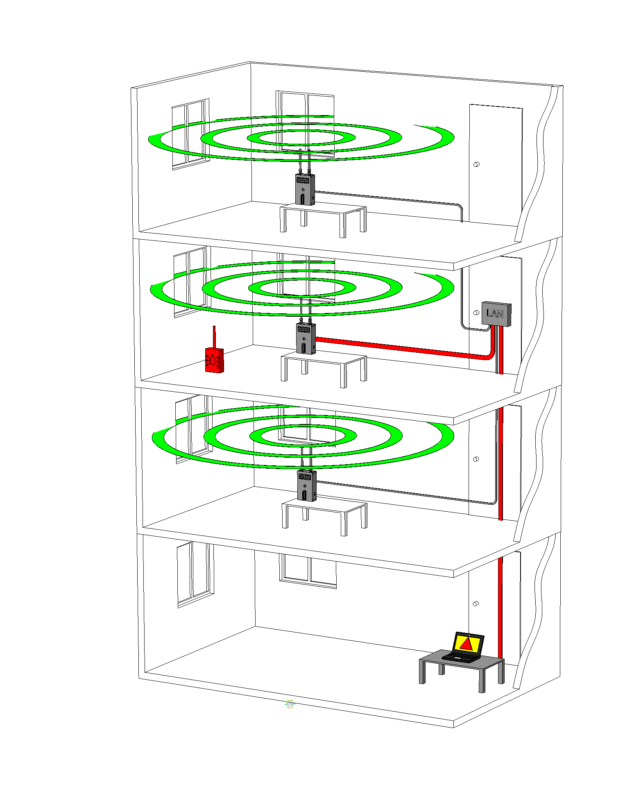
SOFTWARE
Configuration of the CM can be performed both individually and for the whole system. Also there are many adjustable options. There are special patterns of the ignoring frequencies for the cellular, mobile and wireless data bands.
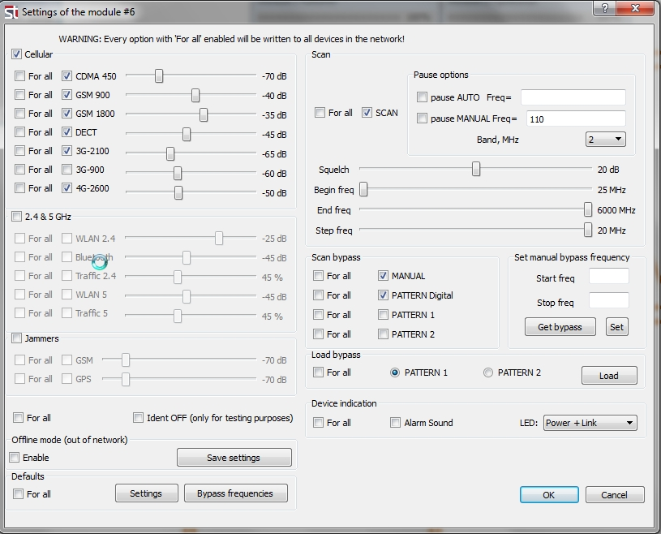
Each CM is assigned its virtual image that allows to watch changes of the radio emission in real-time mode. For convenience, virtual images are placed on the screen, for example, in accordance with the floor plan of the supervised area. The direction finding mode for localization the source of transmission is available, when using multiple CMs
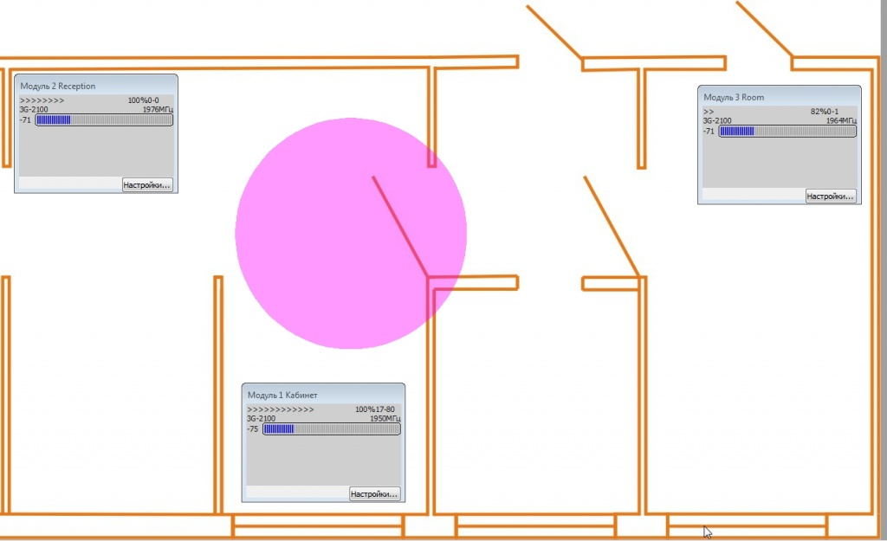
The silent logging mode is always enabled and there are a lot of options of sorting events depending on criteria you need.
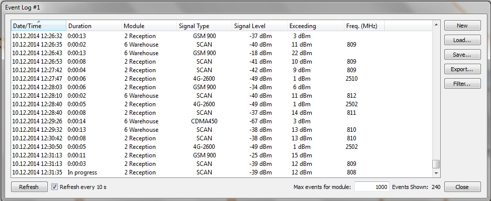
Configuration the ETHERNET and WLAN networks.
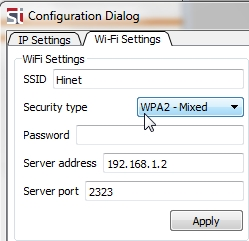
Locating the source of the radio signal
For locating the source of the radio signal there are two ways:
• Processing data from three or more CM is available. Location of the RF device will be immediately displayed on the floor plan.
• Processing data from three or more CM is available. Location of the RF device will be immediately displayed on the floor plan.

• Use the SEARCH MODULE ST-154.S. Information about the signal is transmitted to the SEARCH MODULE via the USB port. The search is based on the signal level indication on the screen of the SEARCH MODULE.”
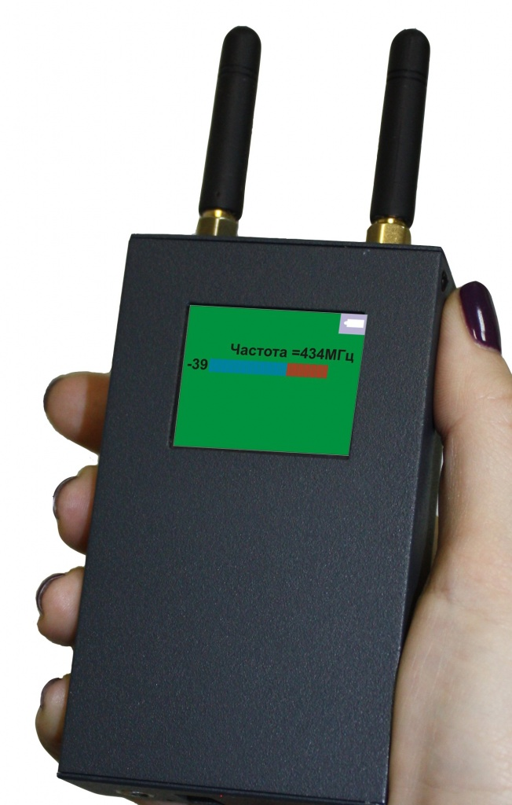
Delivery set consists of:
1 Control module (ST154.A, ST154.W, ST154.E or ST154.E+POE)*
2 Search module ST154.S**
3 Antenna №1*
4 Antenna №2*
5 Power supply 5V 1А
6 Flash drive with software and operation manual
7 USB cable***
2 Search module ST154.S**
3 Antenna №1*
4 Antenna №2*
5 Power supply 5V 1А
6 Flash drive with software and operation manual
7 USB cable***
* Amount varies depending on the size of controlled area.
** Optional. One per system.
*** One per system
** Optional. One per system.
*** One per system
| Specifications: | |
| Frequency range | 25-6000 Mhz |
| Threshold sensitivity, dBm | |
| CDMA450, GSM900, 1800, 4G | -80 |
| 3G | -100 |
| Maximum input level, dBm | -5 |
| Interfaces | USB, WLAN, ETHERNET |
| Supply voltage, V | 5 |
| Consumption current, mA | not more than 500 |
| Dimensions without antenna, mm | 109x60x27 |
| Technical specifications of the SM | |
| Frequency range | 25-6000 MHz |
| Threshold sensitivity, dBm | |
| CDMA450, GSM900, 1800, 4G | -80 |
| 3G | -100 |
| The maximum input level, dBm | -5 |
| Interface | USB |
| Indication | OLED display 160x128 |
| Power supply | Rechargeable Lithium-ion battery |
| Consumption current, mA | not more than 500 |
| Dimensions without antenna, mm | 109x60x27 |
pdf
pdf

{kind=link}
{kind=link}
{kind=link}